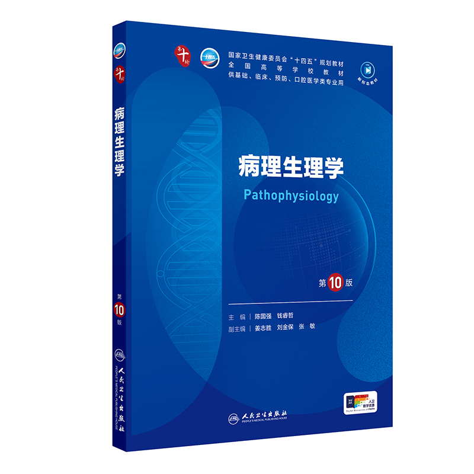
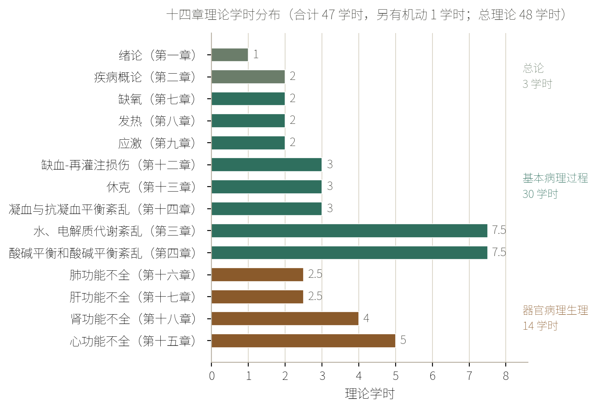
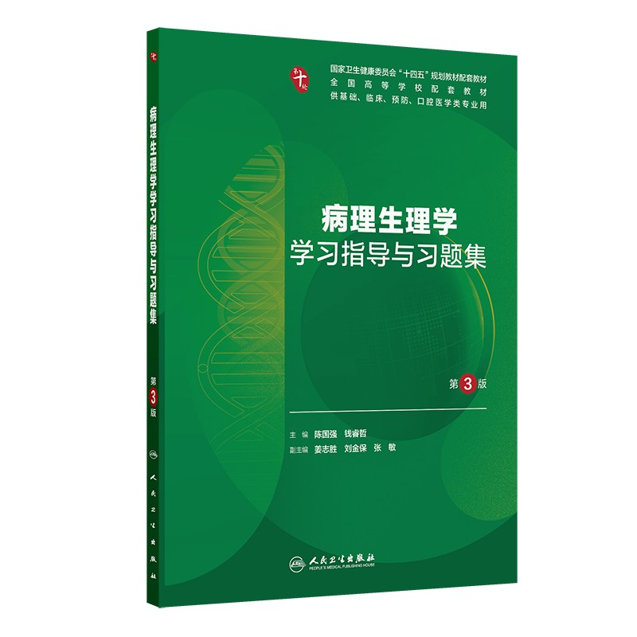

病理生理学全景地图
本节目标：说清三大板块与十四章版图、掌握/熟悉/了解三档各自的达标动作，说出期末闭卷与过程考核的分值构成与题型，认出病例分析题的固定设问结构，并把考点卡片库与错题本的记录规则和调用时机立下来。
一个休克病人
先看一段临床场景。一位休克病人，监护仪上血压往下走，同时出现三种看似不相干的表现：呼吸又深又长，血钾升高，皮肤冒出出血点。刚学完基础课的人，容易把它们当成三件偶然撞在一起的怪事。
病理生理学（pathophysiology）给出的是另一套看法：这三种表现背后是同一套语言——呼吸又深又长是酸碱平衡紊乱的代偿，血钾升高属于钾代谢紊乱，出血点指向凝血与抗凝血平衡紊乱，而三者共同的上游，是微循环衰竭引起的休克。往后每一章，讲的都是这样一组成套的变化；把十四章讲完，这张病例上的每个数字才有解释。
本课不学任何机制，只做一件事：把这张地图钉在墙上。之后每学一章，都回到地图上归一次位——它属于哪一板块、考纲给它多少学时、要求哪一档、考什么题型。地图是拿来复述路线的，不是拿来翻的。
什么是病理生理学
术语先来历、后定义。Pathophysiology 由两个希腊词根拼成：pathos 意为疾病，physiology 意为生理学，合起来就是「疾病的生理学」。十九世纪后期，细胞学、生理学与实验医学相继成熟，医学第一次有可能在功能与代谢层面直接观察患病机体，而不只是描述尸检台上的形态改变。承担这一任务的知识体系，就是病理生理学。
本校教学大纲与人卫《病理生理学》第 10 版绪论采用同一个定义：
病理生理学（pathophysiology）：研究疾病发生、发展过程中功能和代谢改变的规律及其机制的学科。其主要任务是揭示疾病的本质，为建立有效的疾病诊疗和预防策略提供理论和实验依据。
把四门关系最近的课摆在同一张表上，这门课的位置最清楚。判断依据是两条：研究对象是正常机体还是患病机体，研究角度是形态结构还是功能代谢。
| 课程 | 研究对象 | 研究角度 |
|---|---|---|
| 解剖学、组织胚胎学 | 正常机体 | 形态结构 |
| 生理学、生物化学 | 正常机体 | 功能、代谢 |
| 病理学 | 患病机体 | 形态结构 |
| 病理生理学 | 患病机体 | 功能、代谢 |
这张表同时解释了为什么先修课「学过但忘了」不要紧：本课需要的那一小撮生理与生化知识，都会在用到之前单独唤醒，不在这里重讲。
这门课的另一个身份是桥梁学科。一端是基础医学的各门学科，另一端是临床医学的各门学科，病理生理学居中，把「功能与代谢的改变」翻译成临床可见的症状、体征与实验室指标。
桥梁不是修辞。临床医生每天的判断——这个病人的低血压是不是休克、这组血气值提示哪一型紊乱、这个出血点该不该想到 DIC——每一步都要退回病理生理学找依据。这也是本校教学大纲把「综合分析疾病的原因、症状、体征及相关实验室检测指标，解决临床实际问题」写进技能目标的原因。

本课全书以人卫《病理生理学》第 10 版（陈国强、钱睿哲主编，人民卫生出版社 2024）为兜底。凡是章次、目次、定义的口径，以它为准；本校课件是主料，两者不一致时以教材目次为准。
三大板块
全书十四章，讲的是三件事。本校绪论课件把主要内容归为三部分，教学大纲的课程简介用的是同一套说法——总论、基本病理过程、各系统器官病理生理学。
总论（绪论与疾病概论）讲疾病的通则：健康与疾病的概念、病因与条件、疾病发生发展的一般规律与基本机制、完全康复与不完全康复、脑死亡。它不针对哪一种病，回答的是「什么叫病、病怎么来、怎么转归」。
基本病理过程（basic pathological process）指多种疾病中均可出现的、共同的、成套的功能和代谢变化，如发热、缺氧、休克、酸碱平衡紊乱、水与电解质代谢紊乱、缺血-再灌注损伤、弥散性血管内凝血（DIC）等。这个概念的来历，是医学很早就注意到：不同病因、不同器官的疾病，常出现同一套功能代谢改变；把这类跨病共见的变化单列出来研究，才有了基本病理过程这一类目。
各系统器官病理生理学讲重要系统器官在疾病中出现共同的病理生理变化及机制，本书收心功能不全、肺功能不全、肝功能不全、肾功能不全四章。
三个板块的关系，用本校绪论课件的一组例子看得最清楚：大叶性肺炎、细菌性痢疾、流行性脑脊髓膜炎是三种不同的病，病原、受累器官、治法全不一样，却都能出现发热、炎症与休克，流脑还常出现 DIC。
基本病理过程不是一种独立的疾病，它出现在多种疾病之中。把心力衰竭、肝功能衰竭这类器官系统的病变归进基本病理过程，或者反过来把休克、DIC 当成某个病的专属后遗症，都是同一处没分清。区分的问法是：这个改变只见于一种病，还是多种病共见？共见的成套改变才是基本病理过程。
版图与行军路线
三大板块落到章上，就是十四章。下面三张清单是全课总纲，合上书能复述到这一层，第一章的学习目标就达成了。
- 总论：绪论（第一章，1 学时）、疾病概论（第二章，2 学时）
- 基本病理过程：水、电解质代谢紊乱（第三章，7.5 学时）、酸碱平衡和酸碱平衡紊乱（第四章，7.5 学时）、缺氧（第七章，2 学时）、发热（第八章，2 学时）、应激（第九章，2 学时）、缺血-再灌注损伤（第十二章，3 学时）、休克（第十三章，3 学时）、凝血与抗凝血平衡紊乱（第十四章，3 学时）
- 各系统器官病理生理学：心功能不全（第十五章，5 学时）、肺功能不全（第十六章，2.5 学时）、肝功能不全（第十七章，2.5 学时）、肾功能不全（第十八章，4 学时）
十四章的章次并不连着——教学大纲的学时分配表里缺了五、六、十、十一——讲授顺序也不按章次排。本课按大纲学时与后续课的依赖关系走，推进路线如下。
路线里三块地基不对应大纲任何一章，是本课单加的地基唤醒节：肾与水盐、呼吸、心泵与凝血。先修课「学过但忘了」，而水电解质、酸碱、缺氧、休克、心衰、肾衰六章天天要用这三套正常生理的账本，所以先用三节课唤醒到「能读懂教材机制段」的程度，再进正式章节。
学时的分布就是复习权重。教学大纲给出的十四章理论学时分布如下，水、电解质与酸碱两章各 7.5 学时居首，心功能不全 5 学时、肾功能不全 4 学时至次，绪论、疾病概论、应激只有 1 至 2 学时。

assets/img/gen/gen_hours_by_chapter.py），许可：本项目自产）三档要求与达标动作
本校教学大纲对每一章都写一段「教学目的与要求」，用的动词有识记、理解、分析、熟悉、了解、说出、描述、归纳、辨别、列举、解释、说明、探讨等。动词不是装饰，它标出这一条要学到什么程度。备考时把这套动词归成三档来看，每一档对应一套达标动作：掌握、熟悉、了解。
| 档位 | 大纲里的对应表述 | 达标动作 | 主要落在哪种题型 |
|---|---|---|---|
| 掌握 | 教学重点范围内的「理解」「分析」「具备……能力」 | 合上书能复述概念、原因、机制与影响，能写出判断依据、分型与处理原则 | 病例分析题的答案主体、简答题 |
| 熟悉 | 「说出」「描述」「解释」「归纳」「辨别」 | 能按要点复述，给出实例能归到正确的一类 | 选择题、简答题的要点分 |
| 了解 | 「了解」 | 知道名词、知道它归哪一章管，不要求展开 | 选择题的区分项 |
以第三章水、电解质代谢紊乱为例，同一章内三档并存：三型脱水与高钾血症、低钾血症的概念、原因及对机体的影响，加上水肿的发生机制，是教学重点，属掌握级，病例题里要能写出血钠、渗透压、心电图改变的依据；水钠代谢障碍的分类、水肿的分类及常见全身性水肿的特点是「说出」级，属熟悉级；镁、钙、磷代谢紊乱与各型紊乱的防治原则是「了解」级，选择题能辨对即可。
三档同时是分配时间的尺子：掌握级条目值得整块时间，熟悉级跟随做题训练，了解级用选择题巩固。说不出一档对应的达标动作，复习就没有深浅——这是本课第一个要避开的坑。
期末与过程考核
这门课的分数怎么算，写在教学大纲「课程考核方式」一节，绪论课件首页又印了一遍，两处口径一致。
| 构成 | 项目与权重 | 占总评 |
|---|---|---|
| 过程考核 | 作业 50%、阶段测 25%、期中考 25% | 40% |
| 课终考核 | 期末闭卷考试（选择题、简答题、病例分析题） | 60% |
总评成绩 = 课终考核成绩 × 60% + 过程考核成绩 × 40%。课程为考试课，理论 48 学时，实践 0 学时，没有实验课；病例分析的能力只能在纸面练，这也是本课把病例分析题单列一类的原因。
绪论课件首页印着：期末笔试卷面分未达到 60 分者，卷面成绩即总评成绩。过程考核那 40% 救不了卷面。期末这根线，必须自己踩过去。
病例分析题长什么样
本校教学方法写明「病例导入式教学法，课件讲授、板书、病例讨论」，技能目标写明要能综合分析疾病的原因、症状、体征及实验室检测指标，解决临床实际问题。病例分析题就是这条目标在卷面上的落点。三类题各有分工：选择题考识记与辨别，简答题考复述，病例分析题考综合应用。
病例分析题的形态是固定的：先给一段病例——主诉、现病史、体征、若干实验室或器械检查结果——然后设二至四问，每问的答法都有固定层次。
拿开场那位休克病人走一遍结构。设问一考归位：呼吸深长、血钾升高、出血点分别对应哪一章的病理生理变化；设问二考判断：给出 pH 与 PaCO2、HCO3-、血钾的数值，要求写出「哪一型紊乱 + 判断依据」；设问三考影响与原则：该型紊乱对心血管与中枢的影响、处理原则。三问都不超出「机制链 + 判断依据」这一个动作。
卷面上最直接的考法样本，是本校绪论课件的章末复习题：名词解释两题（病理生理学、基本病理过程），问答题一题（病理生理学在医学中的地位如何），选择题两道（本学科的研究对象、基本病理过程的判定）。名词解释考的是定义逐字与要点齐全，简答题考的是分条复述，病例分析题考的是把两者合起来用。学校未附样卷，题量与配分按这三类题型的通用形态准备，以阶段测、期中考与配套习题集的实际口径为准。
卡片库与错题本
这门课 48 学时十四章，机制链长，考前翻教材来不及。从本课起建立两件工具，一直用到考前最后一晚，这是本课的贯穿项目，规则今天当堂立好。
| 考点卡片库 | 错题本 | |
|---|---|---|
| 记什么 | 一个考点一张卡：正面写考点与问题，背面写机制链、框架词与易混点 | 一道错题一条：题目或出处、错在哪、错因归类、正确依据（回教材哪一节） |
| 何时记 | 每课学完，把该课过关标准涉及的条目沉淀成卡 | 做题当天进本，不攒 |
| 何时用 | 每课开始前过上节课的卡；每 3 至 5 个节点阶段评估前整块过；考前七天按板块过 | 清错因，同类归一；阶段评估前先清零，再进新节点 |
| 选题池 | 人卫《病理生理学学习指导与习题集》第 3 版 + 课件章末题 | 同左，另加阶段测、期中考与模拟题 |
两件工具在收尾两课汇合：卡片库总串讲把两百张卡片按十四章重排成树，讲不清的当场重写；全真模拟以错题本为中心讲评，同类错因归一，清零为止。考前 48 小时只看这两件，不看教材。

本课的产出就是两张卡：一张「十四章版图」（三板块各含哪些章、各章学时），一张「考核构成与三档达标动作」（60% 与 40% 怎么分、三档各自要能做到什么）。
这一课怎么过关
本节点的过关标准三条：
- 不看书说出三大板块各包含哪些章；
- 说出期末闭卷与过程考核的分值构成与题型；
- 复述卡片库与错题本的记录规则和调用时机。
下面三步全凭记忆完成，最后才翻书对照。三步的产出就是考前要用的两张卡。
- 合上书，在纸上默写三大板块各含哪些章、各章多少学时；写完与图 4、图 5 对照，把漏掉的章补上，并在每一章旁标出它属哪一板块。
- 复述总评构成：期末闭卷与过程考核各占多少、过程考核内部怎么分、期末三种题型各考什么；再说出三档要求各自的达标动作与对应题型。卡住的地方回第五、六节补一次，直到一口气说全。
- 任举一个本课见过的病例表现（如开场的休克病人），写出病例分析题的四类设问与各问的答题层次，并各写一句答题要点；然后把「十四章版图」与「考核构成与三档动作」两张卡建出来。
- 课件：F:/杂物/病理生理学/1绪论.pdf（根目录版）
- 人卫《病理生理学》第10版（陈国强、钱睿哲，2024）· 绪论
- 本校《病理生理学》教学大纲（2025—2026 学年，2023 级临床/麻醉/精神）
- 人卫《病理生理学学习指导与习题集》第3版（2025）
- 中国大学MOOC · 中南大学《病理生理学》